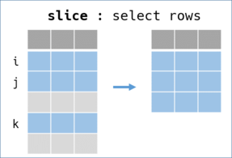
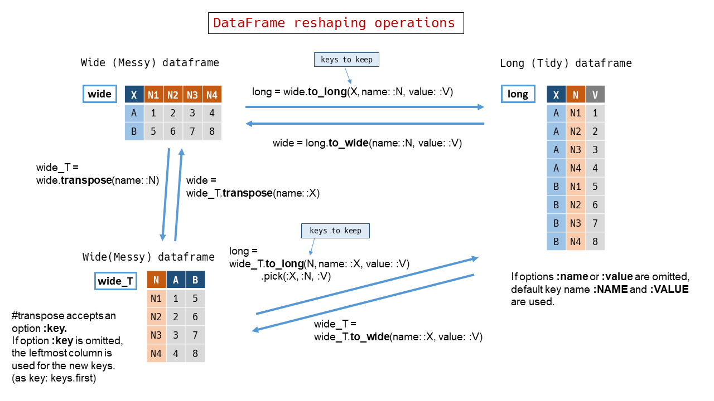

DataFrame
Class RedAmber::DataFrame represents 2D-data. A DataFrame consists with: - A collection of data which have same data type within. We call it Vector. - A label is attached to Vector. We call it key. - A Vector and associated key is grouped as a variable. - variables with same vector length are aligned and arranged to be a DataFrame. - Each key in a DataFrame must be unique. - Each Vector in a DataFrame contains a set of relating data at same position. We call it record or observation.

Constructors and saving
new from a Hash
ruby df = RedAmber::DataFrame.new(x: [1, 2, 3], y: %w[A B C])
new from a schema (by Hash) and data (by Array)
ruby RedAmber::DataFrame.new({x: :uint8, y: :string}, [[1, "A"], [2, "B"], [3, "C"]])
new from an Arrow::Table
ruby table = Arrow::Table.new(x: [1, 2, 3], y: %w[A B C]) RedAmber::DataFrame.new(table)
new from an Object which responds to to_arrow
ruby require "datasets-arrow" dataset = Datasets::Penguins.new RedAmber::DataFrame.new(dataset)
new from a Rover::DataFrame
“‘ruby require ’rover’
rover = Rover::DataFrame.new(x: [1, 2, 3], y: %w[A B C]) RedAmber::DataFrame.new(rover) “‘
load (class method)
-
from a
.arrow,.arrows,.csv,.csv.gzor.tsvfile
ruby RedAmber::DataFrame.load("test/entity/with_header.csv")
ruby RedAmber::DataFrame.load("test/entity/without_header.csv", headers: [:x, :y, :z])
-
from a string buffer
-
from a URI
ruby uri = URI("https://raw.githubusercontent.com/mwaskom/seaborn-data/master/penguins.csv") RedAmber::DataFrame.load(uri)
-
from a Parquet file
“‘ruby require ’parquet’
df = RedAmber::DataFrame.load(“file.parquet”) “‘
save (instance method)
-
to a
.arrow,.arrows,.csv,.csv.gzor.tsvfile -
to a string buffer
-
to a URI
-
to a Parquet file
“‘ruby require ’parquet’
df.save(“file.parquet”) “‘
Properties
table, to_arrow
-
Returns Arrow::Table object in the DataFrame.
size, n_records, n_obs, n_rows
-
Returns size of Vector (num of records).
n_keys, n_variables, n_vars, n_cols,
-
Returns num of keys (num of variables).
shape
-
Returns shape in an Array[n_rows, n_cols].
variables
-
Returns key names and Vectors pair in a Hash.
It is convenient to use in a block when both key and vector required. We will write:
ruby # update numeric variables df.assign do variables.select.with_object({}) do |(key, vector), assigner| assigner[key] = vector * -1 if vector.numeric? end end
Instead of: ruby df.assign do assigner = {} vectors.each_with_index do |vector, i| assigner[keys[i]] = vector * -1 if vector.numeric? end assigner end
keys, var_names, column_names
-
Returns key names in an Array.
Each key must be unique in the DataFrame.
types
-
Returns types of vectors in an Array of Symbols.
type_classes
-
Returns types of vector in an Array of
Arrow::DataType.
vectors
-
Returns an Array of Vectors.
When we use it, Vector#key is useful to get the key in the DataFrame.
ruby # update numeric variables, another solution df.assign do vectors.each_with_object({}) do |vector, assigner| assigner[vector.key] = vector * -1 if vector.numeric? end end
indices, indexes
-
Returns indexes in a Vector. Accepts an option
startas the first of indexes.
“‘ruby df = RedAmber::DataFrame.new(x: [1, 2, 3, 4, 5]) df.indices
# => #<RedAmber::Vector(:uint8, size=5):0x0000000000013ed4> [0, 1, 2, 3, 4]
df.indices(1)
# => #<RedAmber::Vector(:uint8, size=5):0x0000000000018fd8> [1, 2, 3, 4, 5]
df.indices(:a)
# => #<RedAmber::Vector(:dictionary, size=5):0x000000000001bd50> [:a, :b, :c, :d, :e] “‘
to_h
-
Returns column-oriented data in a Hash.
to_a, raw_records
-
Returns an array of row-oriented data without header.
If you need a column-oriented full array, use .to_h.to_a
each_row
Yield each row in a { key => row} Hash. Returns Enumerator if block is not given.
schema
-
Returns column name and data type in a Hash.
==
empty?
Output
to_s
to_s returns a preview of the Table.
puts penguins.to_s
# =>
species island bill_length_mm bill_depth_mm flipper_length_mm ... year
<string> <string> <double> <double> <uint8> ... <uint16>
0 Adelie Torgersen 39.1 18.7 181 ... 2007
1 Adelie Torgersen 39.5 17.4 186 ... 2007
2 Adelie Torgersen 40.3 18.0 195 ... 2007
3 Adelie Torgersen (nil) (nil) (nil) ... 2007
4 Adelie Torgersen 36.7 19.3 193 ... 2007
: : : : : : ... :
341 Gentoo Biscoe 50.4 15.7 222 ... 2009
342 Gentoo Biscoe 45.2 14.8 212 ... 2009
343 Gentoo Biscoe 49.9 16.1 213 ... 2009
inspect
inspect uses to_s output and also shows shape and object_id.
summary, describe
DataFrame#summary or DataFrame#describe shows summary statistics in a DataFrame.
puts penguins.summary.to_s(width: 82) # needs more width to show all stats in this example
# =>
variables count mean std min 25% median 75% max
<dictionary> <uint16> <double> <double> <double> <double> <double> <double> <double>
0 bill_length_mm 342 43.92 5.46 32.1 39.23 44.38 48.5 59.6
1 bill_depth_mm 342 17.15 1.97 13.1 15.6 17.32 18.7 21.5
2 flipper_length_mm 342 200.92 14.06 172.0 190.0 197.0 213.0 231.0
3 body_mass_g 342 4201.75 801.95 2700.0 3550.0 4031.5 4750.0 6300.0
4 year 344 2008.03 0.82 2007.0 2007.0 2008.0 2009.0 2009.0
to_rover
-
Returns a
Rover::DataFrame.
require 'rover'
penguins.to_rover
to_iruby
-
Show the DataFrame as a Table in Jupyter Notebook or Jupyter Lab with IRuby.
tdr(limit = 10, tally: 5, elements: 5)
-
Shows some information about self in a transposed style.
-
tdr_strreturns same info as a String. -
glimpseis an alias. It is similar to dplyr’s (or Polars’s)glimpse().
“‘ruby require ’red_amber’ require ‘datasets-arrow’
dataset = Datasets::Penguins.new # (From 0.2.2) responsible to the object which has to_arrow method. # If older, it should be dataset.to_arrow in the parentheses. RedAmber::DataFrame.new(dataset).tdr
# => RedAmber::DataFrame : 344 x 8 Vectors Vectors : 5 numeric, 3 strings # key type level data_preview 0 :species string 3 “Chinstrap”=>68, “Gentoo”=>124 1 :island string 3 “Biscoe”=>168, “Dream”=>124 2 :bill_length_mm double 165 [39.1, 39.5, 40.3, nil, 36.7, … ], 2 nils 3 :bill_depth_mm double 81 [18.7, 17.4, 18.0, nil, 19.3, … ], 2 nils 4 :flipper_length_mm uint8 56 [181, 186, 195, nil, 193, … ], 2 nils 5 :body_mass_g uint16 95 [3750, 3800, 3250, nil, 3450, … ], 2 nils 6 :sex string 3 “female”=>165, nil=>11 7 :year uint16 3 2008=>114, 2009=>120 “‘
Options: - limit: limit of variables to show. Default value is 10. - tally: max level to use tally mode. Default value is 5. - elements: max num of element to show values in each records. Default value is 5.
Selecting
Select variables (columns in a table) by [] as [key], [keys], [keys[index]]
-
Key in a Symbol:
df[:symbol] -
Key in a String:
df["string"] -
Keys in an Array:
df[:symbol1, "string", :symbol2] -
Keys by indeces:
df[df.keys[0],df[df.keys[1,2]],df[df.keys[1..]]
Key indeces should be used via keys[i] because numbers are used to select records (rows). See next section.
-
Keys by a Range:
If keys are able to represent by a Range, it can be included in the arguments. See a example below.
-
You can also exchange the order of variables (columns).
“‘ruby hash = [1, 2, 3], b: %w[A B C], c: [1.0, 2, 3] df = RedAmber::DataFrame.new(hash) df[:b..:c, “a”]
# => #<RedAmber::DataFrame : 3 x 3 Vectors, 0x00000000000328fc> b c a <string> <double> <uint8> 0 A 1.0 1 1 B 2.0 2 2 C 3.0 3 “‘
If #[] represents a single variable (column), it returns a Vector object.
“‘ruby df
# => #<RedAmber::Vector(:uint8, size=3):0x000000000000f140> [1, 2, 3] “‘
Or #v method also returns a Vector for a key.
“‘ruby df.v(:a)
# => #<RedAmber::Vector(:uint8, size=3):0x000000000000f140> [1, 2, 3] “‘
This method may be useful to use in a block of DataFrame manipulation verbs. We can write v(:a) rather than self[:a] or df[:a]
Select records (rows in a table) by [] as [index], [range], [array]
-
Select a record by index:
df[0] -
Select records by indeces in an Array:
df[1, 2] -
Select records by indeces in a Range:
df[1..2]
An end-less or a begin-less Range can be used to represent indeces.
-
You can use indices in Float.
-
Mixed case:
df[2, 0..]
“‘ruby hash = [1, 2, 3], b: %w[A B C], c: [1.0, 2, 3] df = RedAmber::DataFrame.new(hash) df[2, 0..]
# => #<RedAmber::DataFrame : 4 x 3 Vectors, 0x0000000000033270> a b c <uint8> <string> <double> 0 3 C 3.0 1 1 A 1.0 2 2 B 2.0 3 3 C 3.0 “‘
-
Select records by a boolean Array or a boolean RedAmber::Vector at same size as self.
It returns a sub dataframe with records at boolean is true.
```ruby
# with the same dataframe `df` above
df[true, false, nil] # or
df[[true, false, nil]] # or
df[RedAmber::Vector.new([true, false, nil])]
# =>
#<RedAmber::DataFrame : 1 x 3 Vectors, 0x00000000000353e0>
a b c
<uint8> <string> <double>
1 1 A 1.0
```
Select records (rows) from top or from bottom
head(n=5), tail(n=5), first(n=1), last(n=1)
Sub DataFrame manipulations
pick - pick up variables -
Pick up some variables (columns) to create a sub DataFrame.

-
Keys as arguments
pick(keys) accepts keys as arguments in an Array or a Range.
```ruby
penguins.pick(:species, :bill_length_mm)
# =>
#<RedAmber::DataFrame : 344 x 2 Vectors, 0x0000000000035ebc>
species bill_length_mm
<string> <double>
0 Adelie 39.1
1 Adelie 39.5
2 Adelie 40.3
3 Adelie (nil)
4 Adelie 36.7
: : :
341 Gentoo 50.4
342 Gentoo 45.2
343 Gentoo 49.9
```
-
Indices as arguments
pick(indices) accepts indices as arguments. Indices should be Integers, Floats or Ranges of Integers.
```ruby
penguins.pick(0..2, -1)
# =>
#<RedAmber::DataFrame : 344 x 4 Vectors, 0x0000000000055ce4>
species island bill_length_mm year
<string> <string> <double> <uint16>
0 Adelie Torgersen 39.1 2007
1 Adelie Torgersen 39.5 2007
2 Adelie Torgersen 40.3 2007
3 Adelie Torgersen (nil) 2007
4 Adelie Torgersen 36.7 2007
: : : : :
341 Gentoo Biscoe 50.4 2009
342 Gentoo Biscoe 45.2 2009
343 Gentoo Biscoe 49.9 2009
```
-
Booleans as arguments
pick(booleans) accepts booleans as arguments in an Array. Booleans must be same length as n_keys.
```ruby
penguins.pick(penguins.vectors.map(&:string?))
# =>
#<RedAmber::DataFrame : 344 x 3 Vectors, 0x00000000000387ac>
species island sex
<string> <string> <string>
0 Adelie Torgersen male
1 Adelie Torgersen female
2 Adelie Torgersen female
3 Adelie Torgersen (nil)
4 Adelie Torgersen female
: : : :
341 Gentoo Biscoe male
342 Gentoo Biscoe female
343 Gentoo Biscoe male
```
-
Keys or booleans by a block
pick {block}is also acceptable. We can’t use both arguments and a block at a same time. The block should return keys, indices or a boolean Array with a same length asn_keys. Block is called in the context of self.penguins.pick { keys.map { |key| key.end_with?('mm') } } # => #<RedAmber::DataFrame : 344 x 3 Vectors, 0x000000000003dd4c> bill_length_mm bill_depth_mm flipper_length_mm <double> <double> <uint8> 0 39.1 18.7 181 1 39.5 17.4 186 2 40.3 18.0 195 3 (nil) (nil) (nil) 4 36.7 19.3 193 : : : : 341 50.4 15.7 222 342 45.2 14.8 212 343 49.9 16.1 213
drop - counterpart of pick -
Drop some variables (columns) to create a remainer DataFrame.

-
Keys as arguments
drop(keys) accepts keys as arguments in an Array or a Range.
-
Indices as arguments
drop(indices) accepts indices as a arguments. Indices should be Integers, Floats or Ranges of Integers.
-
Booleans as arguments
drop(booleans) accepts booleans as an argument in an Array. Booleans must be same length as n_keys.
-
Keys or booleans by a block
drop {block} is also acceptable. We can’t use both arguments and a block at a same time. The block should return keys, indices or a boolean Array with a same length as n_keys. Block is called in the context of self.
-
Notice for nil
When used with booleans, nil in booleans is treated as a false. This behavior is aligned with Ruby’s nil#!.
ruby booleans = [true, false, nil] booleans_invert = booleans.map(&:!) # => [false, true, true] df.pick(booleans) == df.drop(booleans_invert) # => true - Difference between pick/drop and []
If pick or drop will select a single variable (column), it returns a DataFrame with one variable. In contrast, [] returns a Vector. This behavior may be useful to use in a block of DataFrame manipulations.
“‘ruby df = RedAmber::DataFrame.new(a: [1, 2, 3], b: %w[A B C], c: [1.0, 2, 3]) df.pick(:a) # or df.drop(:b, :c)
# => #<RedAmber::DataFrame : 3 x 1 Vector, 0x000000000003f4bc> a <uint8> 0 1 1 2 2 3
# => #<RedAmber::Vector(:uint8, size=3):0x000000000000f258> [1, 2, 3] “‘
A simple key name is usable as a method of the DataFrame if the key name is acceptable as a method name. It returns a Vector same as [].
“‘ruby df.a
# => #<RedAmber::Vector(:uint8, size=3):0x000000000000f258> [1, 2, 3] “‘
slice - cut into slices of records -
Slice and select records (rows) to create a sub DataFrame.

-
Indices as arguments
slice(indeces)accepts indices as arguments. Indices should be Integers, Floats or Ranges of Integers.Negative index from the tail like Ruby's Array is also acceptable.
# returns 5 records at start and 5 records from end penguins.slice(0...5, -5..-1) # => #<RedAmber::DataFrame : 10 x 8 Vectors, 0x0000000000042be4> species island bill_length_mm bill_depth_mm flipper_length_mm ... year <string> <string> <double> <double> <uint8> ... <uint16> 0 Adelie Torgersen 39.1 18.7 181 ... 2007 1 Adelie Torgersen 39.5 17.4 186 ... 2007 2 Adelie Torgersen 40.3 18.0 195 ... 2007 3 Adelie Torgersen (nil) (nil) (nil) ... 2007 4 Adelie Torgersen 36.7 19.3 193 ... 2007 : : : : : : ... : 7 Gentoo Biscoe 50.4 15.7 222 ... 2009 8 Gentoo Biscoe 45.2 14.8 212 ... 2009 9 Gentoo Biscoe 49.9 16.1 213 ... 2009 -
Booleans as an argument
filter(booleans) or slice(booleans) accepts booleans as an argument in an Array, a Vector or an Arrow::BooleanArray . Booleans must be same length as size.
note: slice(booleans) is acceptable for orthogonality of slice/remove.
```ruby
vector = penguins[:bill_length_mm]
penguins.filter(vector >= 40)
# penguins.slice(vector >= 40) is also acceptable
# =>
#<RedAmber::DataFrame : 242 x 8 Vectors, 0x0000000000043d3c>
species island bill_length_mm bill_depth_mm flipper_length_mm ... year
<string> <string> <double> <double> <uint8> ... <uint16>
0 Adelie Torgersen 40.3 18.0 195 ... 2007
1 Adelie Torgersen 42.0 20.2 190 ... 2007
2 Adelie Torgersen 41.1 17.6 182 ... 2007
3 Adelie Torgersen 42.5 20.7 197 ... 2007
4 Adelie Torgersen 46.0 21.5 194 ... 2007
: : : : : : ... :
239 Gentoo Biscoe 50.4 15.7 222 ... 2009
240 Gentoo Biscoe 45.2 14.8 212 ... 2009
241 Gentoo Biscoe 49.9 16.1 213 ... 2009
```
-
Indices or booleans by a block
slice {block}is also acceptable. We can’t use both arguments and a block at a same time. The block should return indeces or a boolean Array with a same length assize. Block is called in the context of self.# return a DataFrame with bill_length_mm is in 2*std range around mean penguins.slice do vector = self[:bill_length_mm] min = vector.mean - vector.std max = vector.mean + vector.std vector.to_a.map { |e| (min..max).include? e } end # => #<RedAmber::DataFrame : 204 x 8 Vectors, 0x0000000000047a40> species island bill_length_mm bill_depth_mm flipper_length_mm ... year <string> <string> <double> <double> <uint8> ... <uint16> 0 Adelie Torgersen 39.1 18.7 181 ... 2007 1 Adelie Torgersen 39.5 17.4 186 ... 2007 2 Adelie Torgersen 40.3 18.0 195 ... 2007 3 Adelie Torgersen 39.3 20.6 190 ... 2007 4 Adelie Torgersen 38.9 17.8 181 ... 2007 : : : : : : ... : 201 Gentoo Biscoe 47.2 13.7 214 ... 2009 202 Gentoo Biscoe 46.8 14.3 215 ... 2009 203 Gentoo Biscoe 45.2 14.8 212 ... 2009 -
Notice: nil option
-
Arrow::Table#sliceusesfiltermethod with a optionArrow::FilterOptions.null_selection_behavior = :emit_null. This will propagate nil at the same row.hash = { a: [1, 2, 3], b: %w[A B C], c: [1.0, 2, 3] } table = Arrow::Table.new(hash) table.slice([true, false, nil]) # => #<Arrow::Table:0x7fdfe44b9e18 ptr=0x555e9fe744d0> a b c 0 1 A 1.000000 1 (null) (null) (null) -
Whereas in RedAmber,
DataFrame#slicewith booleans containing nil is treated as false. This behavior comes fromAllow::FilterOptions.null_selection_behavior = :drop. This is a default value forArrow::Table.filtermethod.RedAmber::DataFrame.new(table).slice([true, false, nil]).table # => #<Arrow::Table:0x7fdfe44981c8 ptr=0x555e9febc330> a b c 0 1 A 1.000000
remove - counterpart of slice -
Slice and reject records (rows) to create a remainer DataFrame.

-
Indices as arguments
remove(indeces)accepts indeces as arguments. Indeces should be an Integer or a Range of Integer.# returns 6th to 339th records penguins.remove(0...5, -5..-1) # => #<RedAmber::DataFrame : 334 x 8 Vectors, 0x00000000000487c4> species island bill_length_mm bill_depth_mm flipper_length_mm ... year <string> <string> <double> <double> <uint8> ... <uint16> 0 Adelie Torgersen 39.3 20.6 190 ... 2007 1 Adelie Torgersen 38.9 17.8 181 ... 2007 2 Adelie Torgersen 39.2 19.6 195 ... 2007 3 Adelie Torgersen 34.1 18.1 193 ... 2007 4 Adelie Torgersen 42.0 20.2 190 ... 2007 : : : : : : ... : 331 Gentoo Biscoe 44.5 15.7 217 ... 2009 332 Gentoo Biscoe 48.8 16.2 222 ... 2009 333 Gentoo Biscoe 47.2 13.7 214 ... 2009 -
Booleans as an argument
remove(booleans) accepts booleans as an argument in an Array, a Vector or an Arrow::BooleanArray . Booleans must be same length as size.
```ruby
# remove all records contains nil
removed = penguins.remove { vectors.map(&:is_nil).reduce(&:|) }
removed
# =>
#<RedAmber::DataFrame : 333 x 8 Vectors, 0x0000000000049fac>
species island bill_length_mm bill_depth_mm flipper_length_mm ... year
<string> <string> <double> <double> <uint8> ... <uint16>
0 Adelie Torgersen 39.1 18.7 181 ... 2007
1 Adelie Torgersen 39.5 17.4 186 ... 2007
2 Adelie Torgersen 40.3 18.0 195 ... 2007
3 Adelie Torgersen 36.7 19.3 193 ... 2007
4 Adelie Torgersen 39.3 20.6 190 ... 2007
: : : : : : ... :
330 Gentoo Biscoe 50.4 15.7 222 ... 2009
331 Gentoo Biscoe 45.2 14.8 212 ... 2009
332 Gentoo Biscoe 49.9 16.1 213 ... 2009
```
-
Indices or booleans by a block
remove {block}is also acceptable. We can’t use both arguments and a block at a same time. The block should return indeces or a boolean Array with a same length assize. Block is called in the context of self.penguins.remove do # We will use another style shown in slice # self.bill_length_mm returns Vector mean = bill_length_mm.mean min = mean - bill_length_mm.std max = mean + bill_length_mm.std bill_length_mm.to_a.map { |e| (min..max).include? e } end # => #<RedAmber::DataFrame : 140 x 8 Vectors, 0x000000000004de40> species island bill_length_mm bill_depth_mm flipper_length_mm ... year <string> <string> <double> <double> <uint8> ... <uint16> 0 Adelie Torgersen (nil) (nil) (nil) ... 2007 1 Adelie Torgersen 36.7 19.3 193 ... 2007 2 Adelie Torgersen 34.1 18.1 193 ... 2007 3 Adelie Torgersen 37.8 17.1 186 ... 2007 4 Adelie Torgersen 37.8 17.3 180 ... 2007 : : : : : : ... : 137 Gentoo Biscoe (nil) (nil) (nil) ... 2009 138 Gentoo Biscoe 50.4 15.7 222 ... 2009 139 Gentoo Biscoe 49.9 16.1 213 ... 2009 -
Notice for nil
-
When
removeused with booleans, nil in booleans is treated as false. This behavior is aligned with Ruby'snil#!.df = RedAmber::DataFrame.new(a: [1, 2, nil], b: %w[A B C], c: [1.0, 2, 3]) booleans = df[:a] < 2 booleans # => #<RedAmber::Vector(:boolean, size=3):0x000000000000f410> [true, false, nil] booleans_invert = booleans.to_a.map(&:!) # => [false, true, true] df.slice(booleans) == df.remove(booleans_invert) # => true -
Whereas
Vector#invertreturns nil for elements nil. This will bring different result.booleans.invert # => #<RedAmber::Vector(:boolean, size=3):0x000000000000f488> [false, true, nil] df.remove(booleans.invert) # => #<RedAmber::DataFrame : 2 x 3 Vectors, 0x000000000005df98> a b c <uint8> <string> <double> 0 1 A 1.0 1 (nil) C 3.0
rename
Rename keys (variable/column names) to create a updated DataFrame.

-
Key pairs as arguments
rename(key_pairs)accepts key_pairs as arguments. key_pairs should be a Hash of{existing_key => new_key}or an Array of Arrays like[[existing_key, new_key], ... ].df = RedAmber::DataFrame.new( 'name' => %w[Yasuko Rui Hinata], 'age' => [68, 49, 28] ) df.rename(:age => :age_in_1993) # => #<RedAmber::DataFrame : 3 x 2 Vectors, 0x0000000000060838> name age_in_1993 <string> <uint8> 0 Yasuko 68 1 Rui 49 2 Hinata 28 -
Key pairs by a block
rename {block}is also acceptable. We can’t use both arguments and a block at a same time. The block should return key_pairs as a Hash of{existing_key => new_key}or an Array of Arrays like[[existing_key, new_key], ... ]. Block is called in the context of self. -
Not existing keys
If specified
existing_keyis not exist, raise aDataFrameArgumentError. -
Key type
Symbol key and String key are distinguished.
assign
Assign new or updated variables (columns) and create an updated DataFrame.
-
Variables with new keys will append new columns from right.
-
Variables with exisiting keys will update corresponding vectors.

-
Variables as arguments
assign(key_value_pairs)accepts pairs of key and values as parameters.key_value_pairsshould be a Hash of{key => array_like}or an Array of Arrays like[[key, array_like], ... ].array_likeis etherVector,ArrayorArrow::Array.df = RedAmber::DataFrame.new( name: %w[Yasuko Rui Hinata], age: [68, 49, 28]) df # => #<RedAmber::DataFrame : 3 x 2 Vectors, 0x0000000000062804> name age <string> <uint8> 0 Yasuko 68 1 Rui 49 2 Hinata 28 # update :age and add :brother df.assign( { age: age + 29, brother: ['Santa', nil, 'Momotaro'] } ) # => #<RedAmber::DataFrame : 3 x 3 Vectors, 0x00000000000658b0> name age brother <string> <uint8> <string> 0 Yasuko 97 Santa 1 Rui 78 (nil) 2 Hinata 57 Momotaro -
Key pairs by a block
assign {block}is also acceptable. We can’t use both arguments and a block at a same time. The block should return pairs of key and values as a Hash of{key => array_like}or an Array of Arrays like[[key, array_like], ... ].array_likeis etherVector,ArrayorArrow::Array. The block is called in the context of self.df = RedAmber::DataFrame.new( index: [0, 1, 2, 3, nil], float: [0.0, 1.1, 2.2, Float::NAN, nil], string: ['A', 'B', 'C', 'D', nil] ) df # => #<RedAmber::DataFrame : 5 x 3 Vectors, 0x0000000000069e60> index float string <uint8> <double> <string> 0 0 0.0 A 1 1 1.1 B 2 2 2.2 C 3 3 NaN D 4 (nil) (nil) (nil) # update :float # assigner by an Array df.assign do vectors.select(&:float?) .map { |v| [v.key, -v] } end # => #<RedAmber::DataFrame : 5 x 3 Vectors, 0x00000000000dfffc> index float string <uint8> <double> <string> 0 0 -0.0 A 1 1 -1.1 B 2 2 -2.2 C 3 3 NaN D 4 (nil) (nil) (nil) # Or we can use assigner by a Hash df.assign do vectors.select.with_object({}) do |v, assigner| assigner[v.key] = -v if v.float? end end # => same as above -
Key type
Symbol key and String key are considered as the same key.
-
Empty assignment
If assigner is empty or nil, returns self.
-
Append from left
assign_left method accepts the same parameters and block as assign, but append new columns from left.
“‘ruby df.assign_left(new_index: df.indices(1))
# => #<RedAmber::DataFrame : 5 x 4 Vectors, 0x000000000001787c> new_index index float string <uint8> <uint8> <double> <string> 0 1 0 0.0 A 1 2 1 1.1 B 2 3 2 2.2 C 3 4 3 NaN D 4 5 (nil) (nil) (nil) “‘
slice_by(key, keep_key: false) { block }
slice_by accepts a key and a block to select rows.
(Since 0.2.1)
“‘ruby df = RedAmber::DataFrame.new( index: [0, 1, 2, 3, nil], float: [0.0, 1.1, 2.2, Float::NAN, nil], string: [’A’, ‘B’, ‘C’, ‘D’, nil] ) df
# => #<RedAmber::DataFrame : 5 x 3 Vectors, 0x0000000000069e60> index float string <uint8> <double> <string> 0 0 0.0 A 1 1 1.1 B 2 2 2.2 C 3 3 NaN D 4 (nil) (nil) (nil)
df.slice_by(:string) { [“A”, “C”] }
# => #<RedAmber::DataFrame : 2 x 2 Vectors, 0x000000000001b1ac> index float <uint8> <double> 0 0 0.0 1 2 2.2 “‘
It is the same behavior as;
ruby df.slice { [string.index("A"), string.index("C")] }.drop(:string)
slice_by also accepts a Range.
“‘ruby df.slice_by(:string) { “A”..“C” }
# => #<RedAmber::DataFrame : 3 x 2 Vectors, 0x0000000000069668> index float <uint8> <double> 0 0 0.0 1 1 1.1 2 2 2.2 “‘
When the option keep_key: true used, the column key will be preserved.
“‘ruby df.slice_by(:string, keep_key: true) { “A”..“C” }
# => #<RedAmber::DataFrame : 3 x 3 Vectors, 0x0000000000073c44> index float string <uint8> <double> <string> 0 0 0.0 A 1 1 1.1 B 2 2 2.2 C “‘
Updating
sort
sort accepts parameters as sort_keys thanks to the Red Arrow’s feature。 - :key, “key” or “+key” denotes ascending order - “-key” denotes descending order
“‘ruby df = RedAmber::DataFrame.new( index: [1, 1, 0, nil, 0], string: [’C’, ‘B’, nil, ‘A’, ‘B’], bool: [nil, true, false, true, false], ) df.sort(:index, ‘-bool’)
# => #<RedAmber::DataFrame : 5 x 3 Vectors, 0x000000000009b03c> index string bool <uint8> <string> <boolean> 0 0 (nil) false 1 0 B false 2 1 B true 3 1 C (nil) 4 (nil) A true “‘
-
[ ] Clamp
-
[ ] Clear data
Treat na data
remove_nil
Remove any records containing nil.
Grouping
group(group_keys)
group creates a instance of class Group. Group accepts functions below as a method. Method accepts options as group_keys.
Available functions are:
-
[ ] all
-
[ ] any
-
[ ] approximate_median
-
✓ count
-
[ ] count_distinct
-
[ ] distinct
-
✓ max
-
✓ mean
-
✓ min
-
[ ] min_max
-
✓ product
-
✓ stddev
-
✓ sum
-
[ ] tdigest
-
✓ variance
For the each group of group_keys, the aggregation function is applied and returns a new dataframe with aggregated keys according to summary_keys. Summary key names are provided by function(summary_keys) style.
This is an example of grouping of famous STARWARS dataset.
“‘ruby uri = URI(“vincentarelbundock.github.io/Rdatasets/csv/dplyr/starwars.csv”) starwars = RedAmber::DataFrame.load(uri)
# => #<RedAmber::DataFrame : 87 x 12 Vectors, 0x0000000000005a50> unnamed1 name height mass hair_color skin_color eye_color … species <int64> <string> <int64> <double> <string> <string> <string> … <string> 0 1 Luke Skywalker 172 77.0 blond fair blue … Human 1 2 C-3PO 167 75.0 NA gold yellow … Droid 2 3 R2-D2 96 32.0 NA white, blue red … Droid 3 4 Darth Vader 202 136.0 none white yellow … Human 4 5 Leia Organa 150 49.0 brown light brown … Human : : : : : : : : … : 84 85 BB8 (nil) (nil) none none black … Droid 85 86 Captain Phasma (nil) (nil) unknown unknown unknown … NA 86 87 Padmé Amidala 165 45.0 brown light brown … Human
starwars.tdr(12)
# => RedAmber::DataFrame : 87 x 12 Vectors Vectors : 4 numeric, 8 strings # key type level data_preview 0 :unnamed1 int64 87 [1, 2, 3, 4, 5, … ] 1 :name string 87 [“Luke Skywalker”, “C-3PO”, “R2-D2”, “Darth Vader”, “Leia Organa”, … ] 2 :height int64 46 [172, 167, 96, 202, 150, … ], 6 nils 3 :mass double 39 [77.0, 75.0, 32.0, 136.0, 49.0, … ], 28 nils 4 :hair_color string 13 [“blond”, “NA”, “NA”, “none”, “brown”, … ] 5 :skin_color string 31 [“fair”, “gold”, “white, blue”, “white”, “light”, … ] 6 :eye_color string 15 [“blue”, “yellow”, “red”, “yellow”, “brown”, … ] 7 :birth_year double 37 [19.0, 112.0, 33.0, 41.9, 19.0, … ], 44 nils 8 :sex string 5 “none”=>6, “female”=>16, “hermaphroditic”=>1, “NA”=>4 9 :gender string 3 “feminine”=>17, “NA”=>4 10 :homeworld string 49 [“Tatooine”, “Tatooine”, “Naboo”, “Tatooine”, “Alderaan”, … ] 11 :species string 38 [“Human”, “Droid”, “Droid”, “Human”, “Human”, … ] “‘
We can group by :species and calculate the count.
“‘ruby starwars.remove { species == “NA” } .group(:species).count(:species)
# => #<RedAmber::DataFrame : 37 x 2 Vectors, 0x000000000000ffa0> species count <string> <int64> 0 Human 35 1 Droid 6 2 Wookiee 2 3 Rodian 1 4 Hutt 1 : : : 34 Kaleesh 1 35 Pau’an 1 36 Kel Dor 1 “‘
We can also calculate the mean of :mass and :height together.
“‘ruby grouped = starwars.remove { species == “NA” } .group(:species) { [count(:species), mean(:height, :mass)] }
# => #<RedAmber::DataFrame : 37 x 4 Vectors, 0x000000000000fff0> species count mean(height) mean(mass) <string> <int64> <double> <double> 0 Human 35 176.65 82.78 1 Droid 6 131.2 69.75 2 Wookiee 2 231.0 124.0 3 Rodian 1 173.0 74.0 4 Hutt 1 175.0 1358.0 : : : : : 34 Kaleesh 1 216.0 159.0 35 Pau’an 1 206.0 80.0 36 Kel Dor 1 188.0 80.0 “‘
Select rows for count > 1.
“‘ruby grouped.slice(grouped > 1)
# => #<RedAmber::DataFrame : 8 x 4 Vectors, 0x000000000001002c> species count mean(height) mean(mass) <string> <int64> <double> <double> 0 Human 35 176.65 82.78 1 Droid 6 131.2 69.75 2 Wookiee 2 231.0 124.0 3 Gungan 3 208.67 74.0 4 Zabrak 2 173.0 80.0 5 Twi’lek 2 179.0 55.0 6 Mirialan 2 168.0 53.1 7 Kaminoan 2 221.0 88.0 “‘
Reshape

transpose
Creates transposed DataFrame for the wide (messy) dataframe.
“‘ruby import_cars = RedAmber::DataFrame.load(’test/entity/import_cars.tsv’)
# => #<RedAmber::DataFrame : 5 x 6 Vectors, 0x000000000000d520> Year Audi BMW BMW_MINI Mercedes-Benz VW <int64> <int64> <int64> <int64> <int64> <int64> 0 2017 28336 52527 25427 68221 49040 1 2018 26473 50982 25984 67554 51961 2 2019 24222 46814 23813 66553 46794 3 2020 22304 35712 20196 57041 36576 4 2021 22535 35905 18211 51722 35215
import_cars.transpose(name: :Manufacturer)
# => #<RedAmber::DataFrame : 5 x 6 Vectors, 0x0000000000010a2c> Manufacturer 2017 2018 2019 2020 2021 <string> <uint32> <uint32> <uint32> <uint16> <uint16> 0 Audi 28336 26473 24222 22304 22535 1 BMW 52527 50982 46814 35712 35905 2 BMW_MINI 25427 25984 23813 20196 18211 3 Mercedes-Benz 68221 67554 66553 57041 51722 4 VW 49040 51961 46794 36576 35215 “‘
The leftmost column is created by original keys. Key name of the column is named by parameter :name. If :name is not specified, :NAME is used for the key.
to_long(*keep_keys)
Creates a ‘long’ (may be tidy) DataFrame from a ‘wide’ DataFrame.
-
Parameter
keep_keysspecifies the key names to keep.
“‘ruby import_cars.to_long(:Year)
# => #<RedAmber::DataFrame : 25 x 3 Vectors, 0x0000000000011864> Year NAME VALUE <uint16> <string> <uint32> 0 2017 Audi 28336 1 2017 BMW 52527 2 2017 BMW_MINI 25427 3 2017 Mercedes-Benz 68221 4 2017 VW 49040 : : : : 22 2021 BMW_MINI 18211 23 2021 Mercedes-Benz 51722 24 2021 VW 35215 “‘
-
Option
:nameis the key of the column which came from key names. The default value is:NAMEif it is not specified. -
Option
:valueis the key of the column which came from values. The default value is:VALUEif it is not specified.
“‘ruby import_cars.to_long(:Year, name: :Manufacturer, value: :Num_of_imported)
# => #<RedAmber::DataFrame : 25 x 3 Vectors, 0x000000000001359c> Year Manufacturer Num_of_imported <uint16> <string> <uint32> 0 2017 Audi 28336 1 2017 BMW 52527 2 2017 BMW_MINI 25427 3 2017 Mercedes-Benz 68221 4 2017 VW 49040 : : : : 22 2021 BMW_MINI 18211 23 2021 Mercedes-Benz 51722 24 2021 VW 35215 “‘
to_wide
Creates a ‘wide’ (may be messy) DataFrame from a ‘long’ DataFrame.
-
Option
:nameis the key of the column which will be expanded to key names. The default value is:NAMEif it is not specified. -
Option
:valueis the key of the column which will be expanded to values. The default value is:VALUEif it is not specified.
“‘ruby import_cars.to_long(:Year).to_wide # import_cars.to_long(:Year).to_wide(name: :N, value: :V) # is also OK
# => #<RedAmber::DataFrame : 5 x 6 Vectors, 0x000000000000f0f0> Year Audi BMW BMW_MINI Mercedes-Benz VW <uint16> <uint16> <uint16> <uint16> <uint32> <uint16> 0 2017 28336 52527 25427 68221 49040 1 2018 26473 50982 25984 67554 51961 2 2019 24222 46814 23813 66553 46794 3 2020 22304 35712 20196 57041 36576 4 2021 22535 35905 18211 51722 35215 “‘
Combine
join

You should use specific *_join methods below.
-
otheris a DataFrame or a Arrow::Table. -
join_keysare keys shared by self and other to match with them. -
If
join_keysare empty, common keys in self and other are chosen (natural join). -
If (common keys) >
join_keys, duplicated keys are renamed bysuffix. -
If you want to match the columns with different names, use Hash for
join_keyssuch as{ left: :KEY1, right: KEY2}.
These are dataframes to use in the examples of joins. “‘ruby df = DataFrame.new( KEY: %w[A B C], X1: [1, 2, 3] ) #=> #<RedAmber::DataFrame : 3 x 2 Vectors, 0x0000000000012a70> KEY X1 <string> <uint8> 0 A 1 1 B 2 2 C 3
other = DataFrame.new( KEY: %w[A B D], X2: [true, false, nil] ) #=> #<RedAmber::DataFrame : 3 x 2 Vectors, 0x0000000000017034> KEY X2 <string> <boolean> 0 A true 1 B false 2 D (nil) “‘
Mutating joins
inner_join(other, join_keys = nil, suffix: '.1')
Join data, leaving only the matching records.
ruby df.inner_join(other, :KEY) #=> #<RedAmber::DataFrame : 2 x 3 Vectors, 0x000000000001e2bc> KEY X1 X2 <string> <uint8> <boolean> 0 A 1 true 1 B 2 false
full_join(other, join_keys = nil, suffix: '.1')
Join data, leaving all records.
ruby df.full_join(other, :KEY) #=> #<RedAmber::DataFrame : 4 x 3 Vectors, 0x0000000000029fcc> KEY X1 X2 <string> <uint8> <boolean> 0 A 1 true 1 B 2 false 2 C 3 (nil) 3 D (nil) (nil)
left_join(other, join_keys = nil, suffix: '.1')
Join matching values to self from other.
ruby df.left_join(other, :KEY) #=> #<RedAmber::DataFrame : 3 x 3 Vectors, 0x0000000000029fcc> KEY X1 X2 <string> <uint8> <boolean> 0 A 1 true 1 B 2 false 2 C 3 (nil)
right_join(other, join_keys = nil, suffix: '.1')
Join matching values from self to other.
ruby df.right_join(other, :KEY) #=> #<RedAmber::DataFrame : 2 x 3 Vectors, 0x0000000000029fcc> KEY X1 X2 <string> <uint8> <boolean> 0 A 1 true 1 B 2 false 2 D (nil) (nil)
Filtering join
semi_join(other, join_keys = nil, suffix: '.1')
Return records of self that have a match in other.
ruby df.semi_join(other, :KEY) #=> #<RedAmber::DataFrame : 2 x 2 Vectors, 0x0000000000029fcc> KEY X1 <string> <uint8> 0 A 1 1 B 2
anti_join(other, join_keys = nil, suffix: '.1')
Return records of self that do not have a match in other.
ruby df.anti_join(other, :KEY) #=> #<RedAmber::DataFrame : 1 x 2 Vectors, 0x0000000000029fcc> KEY X1 <string> <uint8> 0 C 3
Set operations

Keys in self and other must be same in set operations.
“‘ruby df = DataFrame.new( KEY1: %w[A B C], KEY2: [1, 2, 3] ) #=> #<RedAmber::DataFrame : 3 x 2 Vectors, 0x0000000000012a70> KEY1 KEY2 <string> <uint8> 0 A 1 1 B 2 2 C 3
other = DataFrame.new( KEY1: %w[A B D], KEY2: [1, 4, 5] ) #=> #<RedAmber::DataFrame : 3 x 2 Vectors, 0x0000000000017034> KEY1 KEY2 <string> <uint8> 0 A 1 1 B 4 2 D 5 “ #####set_operable?(other) Check iftypes` of self and other are same.
intersect(other)
Select records appearing in both self and other.
ruby df.intersect(other) #=> #<RedAmber::DataFrame : 1 x 2 Vectors, 0x0000000000029fcc> KEY1 KEY2 <string> <uint8> 0 A 1
union(other)
Select records appearing in self or other.
ruby df.union(other) #=> #<RedAmber::DataFrame : 5 x 2 Vectors, 0x0000000000029fcc> KEY1 KEY2 <string> <uint8> 0 A 1 1 B 2 2 C 3 3 B 4 4 D 5
difference(other)
Select records appearing in self but not in other.
It has an alias setdiff.
“‘ruby df.difference(other) #=> #<RedAmber::DataFrame : 1 x 2 Vectors, 0x0000000000029fcc> KEY1 KEY2 <string> <uint8> 1 B 2 2 C 3
other.differencr(df) #=> #<RedAmber::DataFrame : 2 x 2 Vectors, 0x0000000000040e0c> KEY1 KEY2
<string> <uint8>
0 B 4
1 D 5 “‘
Binding
concatenate(other)
Concatenate another DataFrame or Table onto the bottom of self. The types of other must be the same as self.
The alias is concat and bind_rows.
An array of DataFrames or Tables is also acceptable as other.
“‘ruby df #=> #<RedAmber::DataFrame : 2 x 2 Vectors, 0x0000000000022cb8> x y <uint8> <string> 0 1 A 1 2 B
other #=> #<RedAmber::DataFrame : 2 x 2 Vectors, 0x000000000001f6d0> x y <uint8> <string> 0 3 C 1 4 D
df.concatenate(other) #=> #<RedAmber::DataFrame : 4 x 2 Vectors, 0x0000000000022574> x y <uint8> <string> 0 1 A 1 2 B 2 3 C 3 4 D “‘
merge(*other)
Concatenate another DataFrame or Table onto the bottom of self. The size of other must be the same as self. Self and other must not share the same key.
The alias is bind_cols.
“‘ruby df #=> #<RedAmber::DataFrame : 2 x 2 Vectors, 0x0000000000009150> x y <uint8> <uint8> 0 1 3 1 2 4
other #=> #<RedAmber::DataFrame : 2 x 2 Vectors, 0x0000000000008a0c> a b <string> <string> 0 A C 1 B D
df.merge(other) #=> #<RedAmber::DataFrame : 2 x 4 Vectors, 0x000000000000cb70> x y a b <uint8> <uint8> <string> <string> 0 1 3 A C 1 2 4 B D “‘
Encoding
-
[ ] One-hot encoding